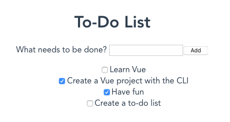

Adding a new todo form: Vue events, methods, and models
We now have sample data in place, and a loop that takes each bit of data and renders it inside a ToDoItem in our app. What we really need next is the ability to allow our users to enter their own todo items into the app, and for that we'll need a text <input>, an event to fire when the data is submitted, a method to fire upon submission to add the data and rerender the list, and a model to control the data. This is what we'll cover in this article.
| Prerequisites: |
Familiarity with the core HTML, CSS, and JavaScript languages, knowledge of the terminal/command line. Vue components are written as a combination of JavaScript objects that manage the app's data and an HTML-based template syntax that maps to the underlying DOM structure. For installation, and to use some of the more advanced features of Vue (like Single File Components or render functions), you'll need a terminal with node + npm installed. |
|---|---|
| Objective: | To learn about handling forms in Vue, and by association, events, models, and methods. |
Creating a New To-Do form
We now have an app that displays a list of to-do items. However, we can't update our list of items without manually changing our code! Let's fix that. Let's create a new component that will allow us to add a new to-do item.
- In your components folder, create a new file called
ToDoForm.vue. - Add a blank
<template>and a<script>tag like before:<template></template> <script> export default {}; </script> - Let's add in an HTML form that lets you enter a new todo item and submit it into the app. We need a
<form>with a<label>, an<input>, and a<button>. Update your template as follows:So we now have a form component into which we can enter the title of a new todo item (which will become a label for the corresponding<template> <form> <label for="new-todo-input"> What needs to be done? </label> <input type="text" id="new-todo-input" name="new-todo" autocomplete="off" /> <button type="submit">Add</button> </form> </template>ToDoItemwhen it is eventually rendered). - Let's load this component into our app. Go back to
App.vueand add the followingimportstatement just below the previous one, inside your<script>element:import ToDoForm from "./components/ToDoForm"; - You also need to register the new component in your
Appcomponent — update thecomponentsproperty of the component object so that it looks like this:components: { ToDoItem, ToDoForm } - Finally for this section, render your
ToDoFormcomponent inside your app by adding the<to-do-form />element inside yourApp's<template>, like so:<template> <div id="app"> <h1>My To-Do List</h1> <to-do-form></to-do-form> <ul> <li v-for="item in ToDoItems" :key="item.id"> <to-do-item :label="item.label" :done="item.done" :id="item.id"></to-do-item> </li> </ul> </div> </template>
Now when you view your running site, you should see the new form displayed.

If you fill it out and click the "Add" button, the page will post the form back to the server, but this isn't really what we want. What we actually want to do is run a method on the submit event that will add the new todo to the ToDoItem data list defined inside App. To do that, we'll need to add a method to the component instance.
Creating a method & binding it to an event with v-on
To make a method available to the ToDoForm component, we need to add it to the component object, and this is done inside a methods property to our component, which goes in the same place as data(), props, etc. The methods property holds any methods we might need to call in our component. When referenced, methods are fully run, so it's not a good idea to use them to display information inside the template. For displaying data that comes from calculations, you should use a computed property, which we'll cover later.
-
In this component, we need to add an
onSubmit()method to amethodsproperty inside theToDoFormcomponent object. We'll use this to handle the submit action. Add this like so:export default { methods: { onSubmit() { console.log("form submitted"); }, }, }; -
Next we need to bind the method to our
<form>element'ssubmitevent handler. Much like how Vue uses thev-bindsyntax for binding attributes, Vue has a special directive for event handling:v-on. Thev-ondirective works via thev-on:event="method"syntax. And much likev-bind, there's also a shorthand syntax:@event="method". We'll use the shorthand syntax here for consistency. Add thesubmithandler to your<form>element like so:<form @submit="onSubmit">…</form> -
When you run this, the app still posts the data to the server, causing a refresh. Since we're doing all of our processing on the client, there's no server to handle the postback. We also lose all local state on page refresh. To prevent the browser from posting to the server, we need to stop the event's default action while bubbling up through the page (
Event.preventDefault(), in vanilla JavaScript). Vue has a special syntax called event modifiers that can handle this for us right in our template. Modifiers are appended to the end of an event with a dot like so:@event.modifier. Here is a list of event modifiers:.stop: Stops the event from propagating. Equivalent toEvent.stopPropagation()in regular JavaScript events..prevent: Prevents the event's default behavior. Equivalent toEvent.preventDefault()..self: Triggers the handler only if the event was dispatched from this exact element.{.key}: Triggers the event handler only via the specified key. MDN has a list of valid key values; multi-word keys just need to be converted to kebab case (e.g.page-down)..native: Listens for a native event on the root (outer-most wrapping) element on your component..once: Listens for the event until it's been triggered once, and then no more..left: Only triggers the handler via the left mouse button event..right: Only triggers the handler via the right mouse button event..middle: Only triggers the handler via the middle mouse button event..passive: Equivalent to using the{ passive: true }parameter when creating an event listener in vanilla JavaScript usingaddEventListener().
.preventmodifier to stop the browser's default submit action. Add.preventto the@submithandler in your template like so:<form @submit.prevent="onSubmit">…</form>
If you try submitting the form now, you'll notice that the page doesn't reload. If you open the console, you can see the results of the console.log() we added inside our onSubmit() method.
Binding data to inputs with v-model
Next up, we need a way to get the value from the form's <input> so we can add the new to-do item to our ToDoItems data list.
The first thing we need is a data property in our form to track the value of the to-do.
-
Add a
data()method to ourToDoFormcomponent object that returns alabelfield. We can set the initial value of thelabelto an empty string. Your component object should now look something like this:export default { methods: { onSubmit() { console.log("form submitted"); }, }, data() { return { label: "", }; }, }; -
We now need some way to attach the value of the
new-todo-inputelement's field to thelabelfield. Vue has a special directive for this:v-model.v-modelbinds to the data property you set on it and keeps it in sync with the<input>.v-modelworks across all the various input types, including checkboxes, radios, and select inputs. To usev-model, you add an attribute with the structurev-model="variable"to the<input>. So in our case, we would add it to ournew-todo-inputfield as seen below. Do this now:<input type="text" id="new-todo-input" name="new-todo" autocomplete="off" v-model="label" />Note: You can also sync data with
<input>values through a combination of events andv-bindattributes. In fact, this is whatv-modeldoes behind the scenes. However, the exact event and attribute combination varies depending on input types and will take more code than just using thev-modelshortcut. -
Let's test out our use of
v-modelby logging the value of the data submitted in ouronSubmit()method. In components, data attributes are accessed using thethiskeyword. So we access ourlabelfield usingthis.label. Update youronSubmit()method to look like this:methods: { onSubmit() { console.log('Label value: ', this.label); } }, - Now go back to your running app, add some text to the
<input>field, and click the "Add" button. You should see the value you entered logged to your console, for example:Label value: My value
Changing v-model behavior with modifiers
In a similar fashion to event modifiers, we can also add modifiers to change the behavior of v-model. In our case, there are two worth considering. The first, .trim, will remove whitespace from before or after the input. We can add the modifier to our v-model statement like so: v-model.trim="label".
The second modifier we should consider is called .lazy. This modifier changes when v-model syncs the value for text inputs. As mentioned earlier, v-model syncing works by updating the variable using events. For text inputs, this sync happens using the input event. Often, this means that Vue is syncing the data after every keystroke. The .lazy modifier causes v-model to use the change event instead. This means that Vue will only sync data when the input loses focus or the form is submitted. For our purposes, this is much more reasonable since we only need the final data.
To use both the .lazy modifier and the .trim modifier together, we can chain them, e.g. v-model.lazy.trim="label".
Update your v-model attribute to chain lazy and trim as shown above, and then test your app again. Try for example, submitting a value with whitespace at each end.
Passing data to parents with custom events
We now are very close to being able to add new to-do items to our list. The next thing we need to be able to do is pass the newly-created to-do item to our App component. To do that, we can have our ToDoForm emit a custom event that passes the data, and have App listen for it. This works very similarly to native events on HTML elements: a child component can emit an event which can be listened to via v-on.
In the onSubmit event handler of our ToDoForm, let's add a todo-added event. Custom events are emitted like this: this.$emit("event-name"). It's important to know that event handlers are case sensitive and cannot include spaces. Vue templates also get converted to lowercase, which means Vue templates cannot listen for events named with capital letters.
- Replace the
console.log()in theonSubmit()method with the following:this.$emit("todo-added"); - Next, go back to
App.vueand add amethodsproperty to your component object containing anaddToDo()method, as shown below. For now, this method can just logTo-do addedto the console.export default { name: "app", components: { ToDoItem, ToDoForm, }, data() { return { ToDoItems: [ { id: uniqueId("todo-"), label: "Learn Vue", done: false }, { id: uniqueId("todo-"), label: "Create a Vue project with the CLI", done: true, }, { id: uniqueId("todo-"), label: "Have fun", done: true }, { id: uniqueId("todo-"), label: "Create a to-do list", done: false }, ], }; }, methods: { addToDo() { console.log("To-do added"); }, }, }; - Next, add an event listener for the
todo-addedevent to the<to-do-form></to-do-form>, which calls theaddToDo()method when the event fires. Using the@shorthand, the listener would look like this:@todo-added="addToDo":<to-do-form @todo-added="addToDo"></to-do-form> -
When you submit your
ToDoForm, you should see the console log from theaddToDo()method. This is good, but we're still not passing any data back into theApp.vuecomponent. We can do that by passing additional arguments to thethis.$emit()function back in theToDoFormcomponent. In this case, when we fire the event we want to pass thelabeldata along with it. This is done by including the data you want to pass as another parameter in the$emit()method:this.$emit("todo-added", this.label). This is similar to how native JavaScript events include data, except custom Vue events include no event object by default. This means that the emitted event will directly match whatever object you submit. So in our case, our event object will just be a string. Update youronSubmit()method like so:onSubmit() { this.$emit('todo-added', this.label) } -
To actually pick up this data inside
App.vue, we need to add a parameter to ouraddToDo()method that includes thelabelof the new to-do item. Go back toApp.vueand update this now:methods: { addToDo(toDoLabel) { console.log('To-do added:', toDoLabel); } }
If you test your form again, you'll see whatever text you enter logged in your console upon submission. Vue automatically passes the arguments after the event name in this.$emit() to your event handler.
Adding the new todo into our data
Now that we have the data from ToDoForm available in App.vue, we need to add an item representing it to the ToDoItems array. This can be done by pushing a new to-do item object to the array containing our new data.
- Update your
addToDo()method like so:addToDo(toDoLabel) { this.ToDoItems.push({id:uniqueId('todo-'), label: toDoLabel, done: false}); } - Try testing your form again, and you should see new to-do items get appended to the end of the list.
-
Let's make a further improvement before we move on. If you submit the form while the input is empty, todo items with no text still get added to the list. To fix that, we can prevent the todo-added event from firing when name is empty. Since name is already being trimmed by the
.trimmodifier, we only need to test for the empty string. Go back to yourToDoFormcomponent, and update theonSubmit()method like so. If the label value is empty, let's not emit thetodo-addedevent.onSubmit() { if (this.label === "") { return; } this.$emit('todo-added', this.label); } - Try your form again. Now you will not be able to add empty items to the to-do list.

Using v-model to update an input value
There's one more thing to fix in our ToDoForm component — after submitting, the <input> still contains the old value. But this is easy to fix — because we're using v-model to bind the data to the <input> in ToDoForm, if we set the name parameter to equal an empty string, the input will update as well.
Update your ToDoForm component's onSubmit() method to this:
onSubmit() {
if (this.label === "") {
return;
}
this.$emit('todo-added', this.label);
this.label = "";
}
Now when you click the "Add" button, the "new-todo-input" will clear itself.
Summary
In this module
- Introduction to client-side frameworks
- Framework main features
- React
- Ember
- Vue
- Getting started with Vue
- Creating our first Vue component
- Rendering a list of Vue components
- Adding a new todo form: Vue events, methods, and models
- Styling Vue components with CSS
- Using Vue computed properties
- Vue conditional rendering: editing existing todos
- Focus management with Vue refs
- Vue resources
- Svelte
- Angular